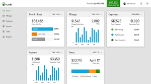

An expense tracker app allows you to monitor and categorize your expenses across different bank and investment accounts and credit cards . Some of these apps also offer budgeting tools, credit monitoring, mileage tracking, receipt keeping, and advice to grow
your net worth.The basic information about pets and pet products in the shop. An option for storing and managing the sales details of the shop. Storing and managing the basic information about the customer. Track the information about sold pets and products to a customer. This system is written in PHP and MYSQL.However, the front end
codes use for the main page, insertion, search, deletion are displayed